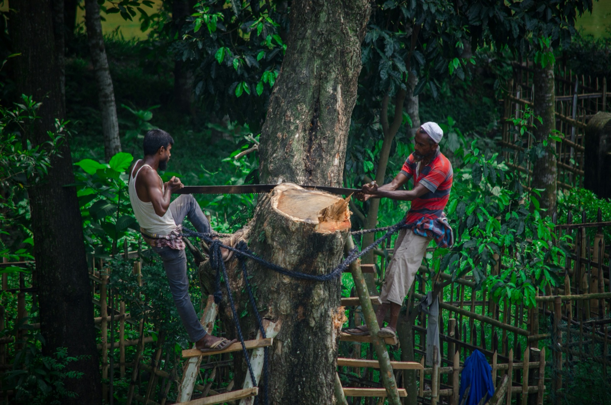

On this page

A high-stakes challenge with no clean answer.
The brief
Choose a wicked problem: a systemic, messy problem with no single cause and no single solution, such as food waste, loneliness, over-tourism or plastic pollution. In one intense week, map the problem, find one place where design can make a real dent, and pitch a working concept.
This is a high-stakes, one-week sprint. You will use Claude Code and Claude Design to build concept prototypes in hours, not weeks.
The problem
Wicked problems can't be solved, only improved. The trap is either trying to fix everything (and designing nothing) or jumping to an app before understanding the system. You need to see the whole system, then zoom in on one leverage point small enough to design for.
Your challenge
Choose your topic, then write your own: How might we make a meaningful dent in [your wicked problem] for [a specific group of people]?
Sprint goals
- Choose a wicked problem you care about and can research.
- Map its causes, effects and actors.
- Ground your understanding in credible desk research.
- Define one focused, designable problem.
- Generate many ideas, then converge on one.
- Build, test and pitch a concept prototype.
Scope
In scope - One wicked problem, explored as a system. - One leverage point and one target group. - A concept-level prototype (it can be a product, a service or a campaign) that you can test and pitch.
Out of scope - Solving the whole problem. - A polished, production-ready product. - Long primary-research programmes: desk research and quick tests carry this week.
Deliverables
- Wicked problem map: causes, effects and actors.
- Desk research summary with credible sources.
- Problem statement for your chosen leverage point.
- Crazy 8's sketches (with and without AI) and a solution sketch.
- Concept prototype, from paper to hi-fi, with quick usability tests.
- Solution pitch and concept design review.
How the sprint runs
| Week | Day | What you do |
|---|---|---|
| 6 | Mon | Sprint brief; choose a wicked topic (Wicked Problem lecture) |
| 6 | Tue | Wicked Problem Mapping |
| 6 | Wed | Desk Research, Problem Statement, Crazy 8's, Crazy 8's with AI, Converge / Diverge |
| 6 | Thu | Paper Wireframes, Mid-Fi, Hi-Fi, Usability Test |
| 6 | Fri | Solution Sketch, Vote, solution pitch and concept design review |
Constraints and tips
- Pick a topic with evidence. If you can't find credible research on it, choose another.
- Zoom in fast. By Wednesday you should have one leverage point and one target group.
- Let the AI build, you decide. Use Claude Code and Claude Design to prototype quickly, but the thinking and the choices are yours.
- Pitch the dent, not the cure. Be honest about what your concept can and can't change.
Success looks like
A clear map of a messy system, a well-argued choice of where to intervene, and a tested concept that makes a believable dent, pitched with confidence in five minutes.